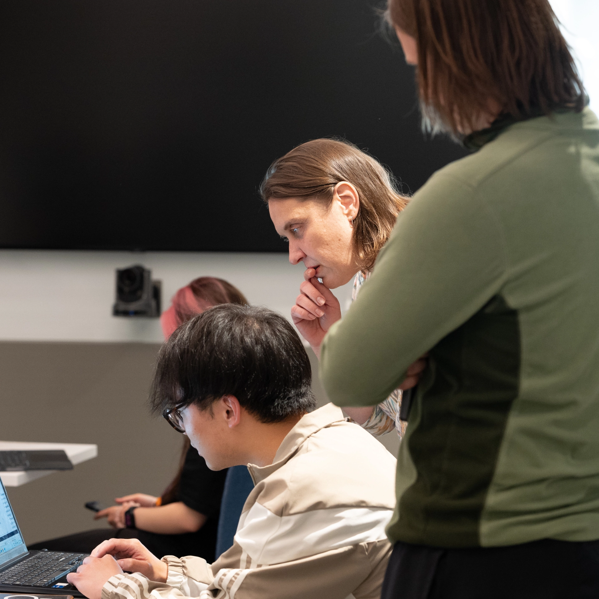

Statistical Science Specialists
Choose a specialist pathway focused on mathematical foundations and statistical methods, or on modelling, computing and applied problem-solving.
Explore specialist programs →
UNDERGRADUATE PROGRAMS
Explore six program options that develop the mathematical, statistical and computational skills to understand data, evaluate evidence and solve problems across disciplines.
Choose a specialist pathway focused on mathematical foundations and statistical methods, or on modelling, computing and applied problem-solving.
Explore specialist programs →Build a flexible foundation in statistics, or complement your primary field of study with statistical knowledge and analytical skills.
Explore Statistics programs →Combine statistics and computing through an interdisciplinary specialist, or develop applied data science skills through a minor.
Explore Data Science programs →The two Statistical Science specialist programs offer different emphases within the study of statistics. Choose the pathway that best reflects your interests.
Statistics can stand at the centre of your studies or complement another field. These programs help students develop the knowledge and analytical skills to work with data.
Data science brings together statistical thinking, computing and the tools needed to work with complex data. The department offers both specialist and minor pathways.
Data is everywhere. Statistics helps us identify patterns, develop models, make predictions, evaluate evidence and draw reliable conclusions.
Our programs bring together mathematical foundations, programming and computational skills. You learn not only how to analyse data, but how statistical methods work, why they work and when their conclusions can be trusted.
Our alumni community extends around the world. The brochure's alumni snapshot maps the countries where graduates were employed as of 2025.
Build experience, develop professional skills and explore how statistical thinking is used in different sectors.
ASIP offers eligible students paid work experience. The current Faculty of Arts & Science program listing identifies the Data Science Specialist and both Statistical Science Specialist programs as ASIP-eligible. Check the current ASIP eligibility information before applying.
Learn about Statistical Sciences internship opportunities ↗Graduates pursue careers in technology, finance, health, government, research and more. Common job titles recorded by more than 12,000 alumni include:
Connects first-year students with experienced upper-year students who offer guidance on navigating university life, developing effective study habits and exploring academic opportunities.
A learning community for second-year students in the major or specialist programs. Upper-year mentors, faculty and professionals answer questions about academics, graduate school and employment.
Built into the introductory course for Statistical Sciences, Actuarial Science and Data Science degrees, this mentorship gives first-year students early access to peer support and guidance.
The Statistical Sciences Student Union (SSU) and Students in Data Science and Statistics (SDSS) connect undergraduate students through academic support, networking and community events. The Stats Aid Centre offers further learning support.
A global data analysis competition where undergraduate teams solve real-world problems, analyse datasets and present their findings to industry judges.
Work alongside world-class researchers. Faculty research ranges from using data to understand problems in health, the environment, finance and society to developing new mathematical theories and computational methods.
Undergraduate students can explore faculty-supervised projects, undergraduate summer research awards and the Statistical Sciences Research Program (UTSSRP).
Explore undergraduate opportunities ↗
Apply to the Faculty of Arts & Science at the St. George campus. Students interested in Statistics generally apply through the Physical & Mathematical Sciences admission category.
Students normally apply to a program of study after completing their first year, subject to the enrolment requirements for each program. Program application dates, stages and steps are available through the Faculty of Arts & Science Program Toolkit.
How to apply to Arts & Science ↗Program descriptions are summaries. Consult the Faculty of Arts & Science Academic Calendar for complete requirements.
View the Academic Calendar ↗